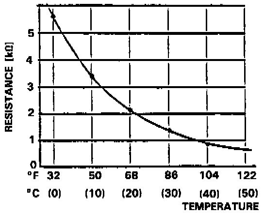

Operation CHARM
: Car repair manuals for everyone.
Home
>>
Acura
>>
1990
>>
Legend Coupe V6-2675cc 2.7L SOHC FI
>>
Repair and Diagnosis
>>
Heating and Air Conditioning
>>
Sensors and Switches - HVAC
>>
Ambient Temperature Sensor / Switch HVAC
>>
Specifications
Ambient Temperature Sensor / Switch HVAC: Specifications

The resistance reading between terminals of the ambient temperature sensor should match the specifications shown in the graph.